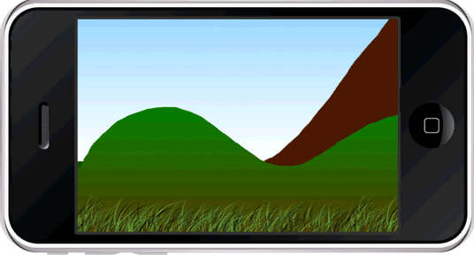

Parallax UINavigatorController for iPhone
About
it is UI tweak for UINavigationController. Have you see parallax background on Android Main screen. It's the same but for iPhone.
it looks like in game but for regular UIViewController applications
how to use
It's very easy. You can extend your current application by simple steps:
put 2 files from 'ParallaxUINavigatorController lib' to your project
add to your project image that will be used for Parallax
update your applicatio .plist by item "ParallaxBackground" with name of image sfom step 3
in storyboar change class name (section 'custom class' in properties window) from UINavigatorController to ParallaxUINavigationController
For each UIViewController set background color for root view to Transparent(clearColor)
example
This project contains Example in 'ParallaxUINavigatorController'. You can check functionality from there.
License
MIT license is applicable for this lib.